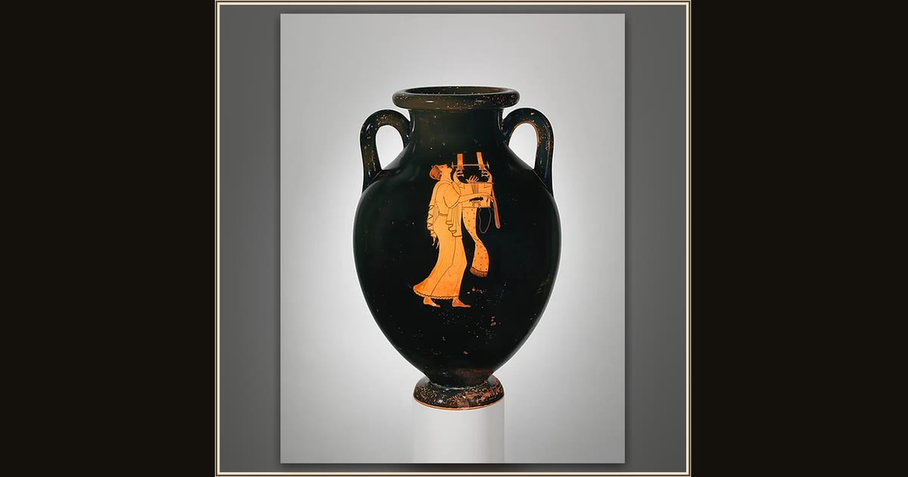

Terracotta amphora (jar)
Attributed to the Berlin Painter · ca. 490 BCE · The Metropolitan Museum of Art · New York, USA
Painted on a jar some 2,500 years ago, this young man throws his head back and opens his mouth in full song. He is the picture of the bard the Greeks loved at every feast, like Demodocus, the blind singer whose song of the wooden horse melts Odysseus to tears